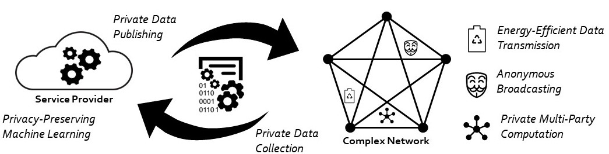

Research InterestsThe explosive growth in connectivity and information sharing across a variety of electronic platforms has been accelerating the use of inferential machine learning to guide consumers through a myriad of choices and decisions. While this vision is expected to generate many disruptive business and social opportunities, it presents a number of unprecedented challenges. First, massive amounts of data need to be collected by, and transferred across, resource-constrained devices. Second, the collected data needs to be stored, processed, and analyzed at scales never previously seen. Third, serious concerns such as access control, data privacy, and security should be rigorously addressed. My research tackles these challenges (see Figure below).  Research ProjectsPrivacy-preserving machine learningIn statistical analyses involving sensitive data from individuals, there is a growing tension between the need to collect and share data, and the need to preserve the privacy of individuals. The need for privacy appears in three main contexts: (1) the global privacy context, where institutions release information about individuals; (2) the local privacy context, where individuals disclose their personal information to potentially malicious service providers; (3) the multi-party privacy context, where different parties cooperate to interactively compute a function that is defined over all the parties’ data. Differential privacy (DP) has recently emerged as a strong measure of privacy in all three contexts. Under DP, privacy is achieved by randomizing the data before releasing it. This leads to a natural tradeoff between privacy and utility. In a series of papers [NIPS’14, ICML’15, NIPS’15, TSTSP’15, CISS’16, JMLR’16, ICML’16, TIT’17], I have studied the tradeoff between DP and data utility in all three contexts, and derived optimal (and surprisingly simple) privacy mechanisms for a variety of learning applications. Surprisingly, my findings show the universal optimality of a family of extremal privacy mechanisms called staircase mechanisms. This fundamental result is directly tied to the geometry of DP: staircase mechanisms are corner points of the polytope formed by the DP constraints. While the vast majority of works on DP have focused on using the Laplace mechanism, my results show that it is strictly suboptimal and can be replaced by a staircase mechanism to improve utility. Generative adversarial privacyMy work, in collaboration with Google researchers, has shown that the strong privacy guarantees of DP often come at a significant loss in utility and sample complexity [ICML’16]. This has inspired me to search for a new privacy notion that achieves a better privacy-utility tradeoff, while still offering meaningful privacy guarantees. My search has led me to context-aware privacy. Unlike context-free notions of privacy (such as DP), context-aware approaches achieve a better privacy-utility tradeoff by exploiting dataset statistics and explicitly modeling the private variables. However, dataset statistics are hardly ever present in practice. To circumvent this issue, my ASU collaborators and I introduced a novel data-driven framework for context-aware privacy called generative adversarial privacy (GAP) [ENTROPY’17]. GAP leverages recent advancements in generative adversarial networks (GANs) to allow the data holder to learn optimal privacy mechanisms directly from data. Under GAP, the privacy problem is formulated as a minimax game between two parties: (i) an adversary that wishes to learn the private variables from the sanitized data, and (ii) a privatizer (a conditional generative model) that sanitizes the dataset in a way that limits the performance of the adversary. GAP has deep game-theoretic and information-theoretic roots that allow us to provide provable privacy guarantees against a variety of strong adversaries. Anonymous broadcasting over networksThe demand for anonymity is evident from the popularity of anonymous messaging applications. Anonymity is also crucial in nations with authoritarian governments, where the right to free expression and the personal safety of message authors hinge on anonymity. Current anonymous messaging applications hide authorship information from their users but store this sensitive information on their servers. Thus, under current designs, authorship information may be accessible to government agencies, hackers, advertisers, and of course, the company itself. In collaboration with UC Berkeley researchers, I have designed adaptive diffusion: a fully distributed statistical spreading protocol that uses space-and time-dependent Markov processes to broadcast messages over a social network in a way that hides authorship information [SIGMETRICS’15, SIGMETRICS’16, TSIPN’16, ICML’16, TIT’17]. Under a variety of adversarial and graph models, I have shown that adaptive diffusion enables the author to hide perfectly among the set of all users with the message. Large-scale simulations on real-life networks have verified the efficacy of this approach in practice. Anonymous communication is of broad scientific and public interest; my work on anonymous social-network messaging has received considerable of attention in my community and the media. Energy-efficient protocols for massive wireless random accessThe number of devices connected to the Internet has recently surpassed the global human population, and is projected to hit trillions within the next two decades. This super exponential growth is predominantly fueled by the emergence of low-energy, low-cost wireless devices that combine communication, computation, and sensing. These wireless devices are expected to form the fabric of smart technologies and cyberphysical systems. In this context, energy efficiency, as opposed to spectral efficiency, is extremely important because these devices are expected to be powered by tiny batteries or energy harvesting technologies. Existing technologies are designed for a very different regime: high data rates, large payloads, and abundant on-device processing power and energy. They are thus fundamentally incapable of delivering the needed energy efficiency and scalability. To address this issue, my Stanford colleagues and I have recently analyzed random access protocols that combine the device discovery and data transmission phases, embrace device collisions, trade spectral efficiency for energy efficiency, adopt simple modulation and decoding schemes. My main technical contributions are: (1) investigating the fundamental tradeoff between the maximum number of simultaneously active devices, energy efficiency, and spectral efficiency; (2) designing optimal codes that allow a massive number of energy-starved devices to sporadically access the spectrum with minimal coordination and synchronization overheads [Allerton’17, ICC’17]. Ongoing and Future ResearchBringing semantics to DPMy research on differential privacy (DP) has shown that such a strong notion of privacy often comes at an unbearable cost, especially when the data lives in large dictionaries. The problem with DP is that it assumes that all the elements of the dictionary are equally sensitive. However, in practice, not all elements are equally sensitive; e.g., ‘‘google.com’’ vs. ‘‘marijuana.com.’’ I am currently collaborating with Google researchers to study a generalized notion of DP that allows the privacy level to vary across the dictionary. This generalization allows system designers to put privacy where it matters without paying the cost where it does not. Deploying GAP in the wildMy work on generative adversarial privacy (GAP) has demonstrated that under a variety of canonical dataset models, the privacy schemes that are learned from data provide rigorous privacy guarantees against a strong adversary that has access to the underlying data statistics, knows the privacy scheme, and can compute the optimal decision rule that maximizes its utility. Further, the learned privacy mechanisms match the game-theoretically optimal ones. Ultimately, my goal is to apply GAP to the 1M+ records of PG&E's massive dataset available to my Stanford mentor. In fact, PG&E is very excited about the potentials of GAP. Working towards that goal, I am currently testing GAP on the Irish Commission for Energy Regulation Smart Meter Database. Analyzing the convergence and generalization guarantees of GAPAdopting a data-driven notion of privacy faces important practical challenges: how to rigorously quantify the privacy guarantees of a learned privacy mechanism, and how to assess its performance relative to the theoretical optimal one? To address these fundamental questions, I plan to investigate the convergence and generalization guarantees of GAP. In the absence of such theoretical analyses, the privacy guarantees of data-driven approaches are limited to computational adversaries, making them questionable by many. While GANs have seen empirical success, their theoretical analysis has just emerged as an important research topic. I plan to use these recent advances to study the theoretical guarantees of GAP. Designing deep learning algorithms for RF authentication systemsMany over-the-air transmissions by medical implants, wearables, and textile sensors are expected to carry sensitive data about individuals. It is therefore of utmost importance to protect such communication links against spoofing attacks. Classical cryptographic based authentication approaches are simply inadequate because they necessitate a tremendous increase in local computational, memory, and energy costs. A better approach is to harness the devices’ hardware imperfections, which introduce minute (but unique) nonlinear distortions to the transmitted data signal, to authenticate devices. Such an approach shifts the complexity away from the device and places all the burden on the more capable central (receiving) node. The challenge, however, is to design robust and scalable deep learning algorithms capable of accurately classifying 10k+ devices from the data they transmit. To tackle this problem, I teamed up with a group of Stanford professors and Rockwell Collins researchers to design a deep radio authentication system. Our preliminary design is inspired by Google's FaceNet, the 2015 MegaFace Challenge winner. Moving forward, my hope is to bring machine learning to more applications in the wireless systems domain. Bringing AI closer to the edgeThe current cloud computing model requires the transfer of data from devices to the cloud where data analytics happens. However, as the number of connected devices continues to grow at an exponential rate, this model will suffer from several major limitations, such as network congestion, latency, and privacy concerns. To overcome these bottlenecks, I believe that we should push intelligence closer to the edge. While there have been several attempts to bring inference to the edge, training machine learning algorithms on the device is still largely unexplored. On-device training and inference can reduce the network traffic drastically, address latency concerns, and ensure that sensitive data never leaves the device. Nonetheless, such a novel approach introduces a few key challenges. For instance, one interesting question is: how much training should be done locally vs. globally (on the cloud)? This question requires a systematic analysis of the computation vs. communication tradeoff. Another related question is: how does one aggregate the learned models across devices? Simple averaging can be a good approach when the models are trained on the same number of i.i.d. data points. However, this is unlikely to be the case in practice. My future research will focus on addressing these fundamental questions. Harnessing adversarial examples for privacy purposesState-of-the-art machine learning algorithms can be fooled by carefully crafted adversarial examples. The security and machine learning communities believe that adversarial examples represent a concrete problem in AI safety. But what if we can harness the power of adversarial examples for privacy purposes? In particular, can we inject carefully designed (low-magnitude) adversarial noise into the data in a way that prevents malicious entities from learning sensitive attributes while still allowing non-malicious data scientists to learn useful information from the data? This is a research direction I plan to pursue in the future |